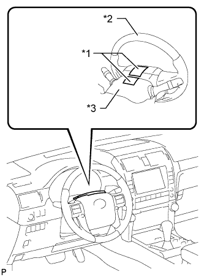
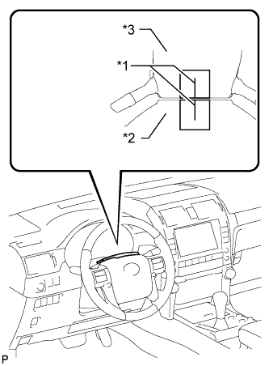
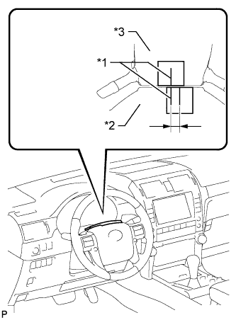
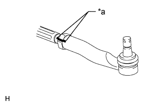
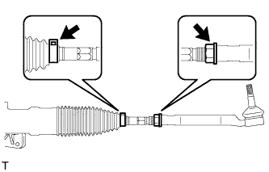

STEERING SYSTEM > ADJUSTMENT |
| 1. STEERING OFF CENTER ADJUSTMENT PROCEDURE |
Check if the steering wheel is off center.
|  |
Apply masking tape to the top center of the steering wheel and steering column upper cover.
| *1 | Masking Tape |
| *2 | Steering Wheel |
| *3 | Steering Column Upper Cover |
Drive the vehicle in a straight line for 100 m (328 ft.) at a constant speed of 56 km/h (35 mph) and hold the steering wheel to maintain course.
|  |
Draw a line on the masking tape as shown in the illustration.
| *1 | Marked Line |
| *2 | Steering Wheel |
| *3 | Steering Column Upper Cover |
Turn the steering wheel to the center position.
|  |
Draw a new line on the masking tape on the steering wheel as shown in the illustration.
| *1 | Marked Line |
| *2 | Steering Wheel |
| *3 | Steering Column Upper Cover |
Measure the distance between the 2 lines on the masking tape on the steering wheel.
Convert the measured distance to a steering angle value.
Adjust the steering angle.
|  |
Place matchmarks RH and LH tie rod ends and rack ends respectively where it can be easily seen.
| *1 | Matchmark |
Using a paper gauge, measure the distance from the RH and LH tie rod ends to the rack end screws.
|  |
Remove the RH and LH boot clips from the rack boots.
Loosen the RH and LH lock nuts.
Turn the RH and LH rack ends by the same amount (but in different directions) according to the steering angle value
Tighten the RH and LH lock nuts to the specified torque.
Install the RH and LH boot clips.